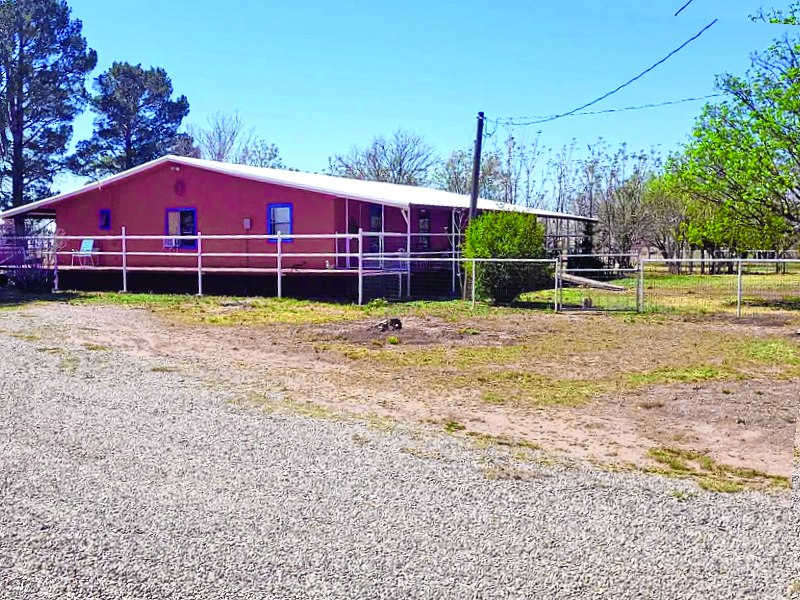
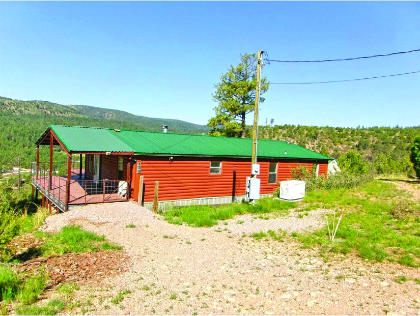
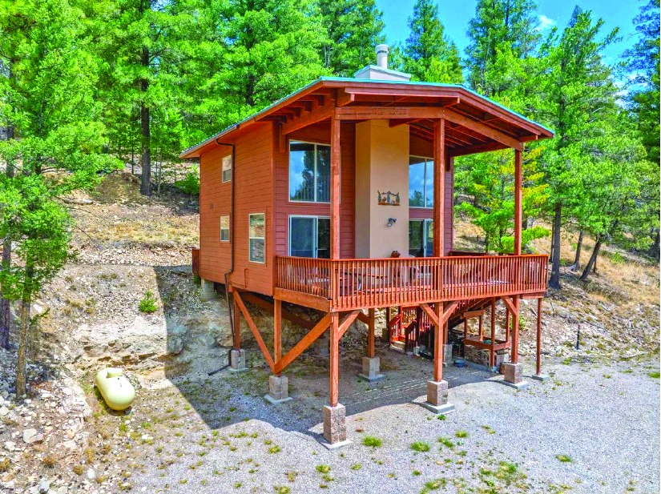
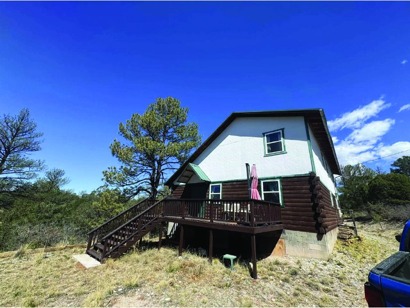
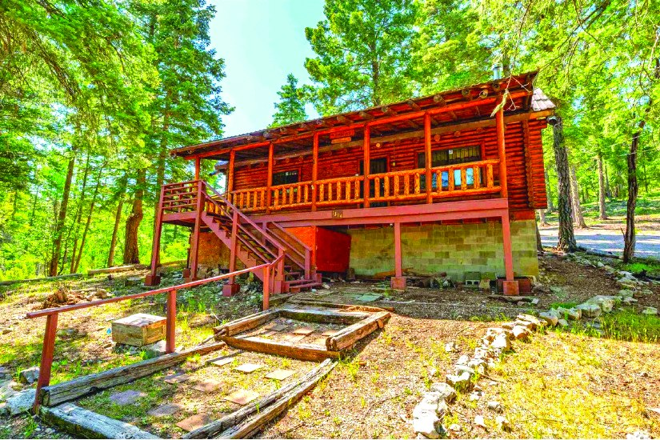
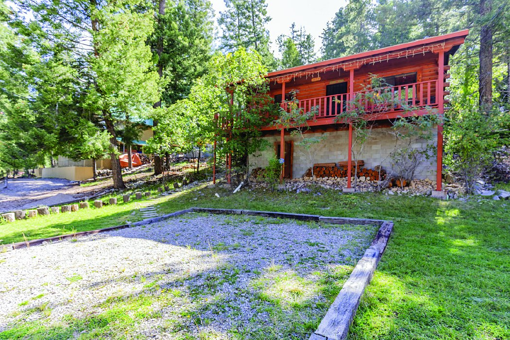
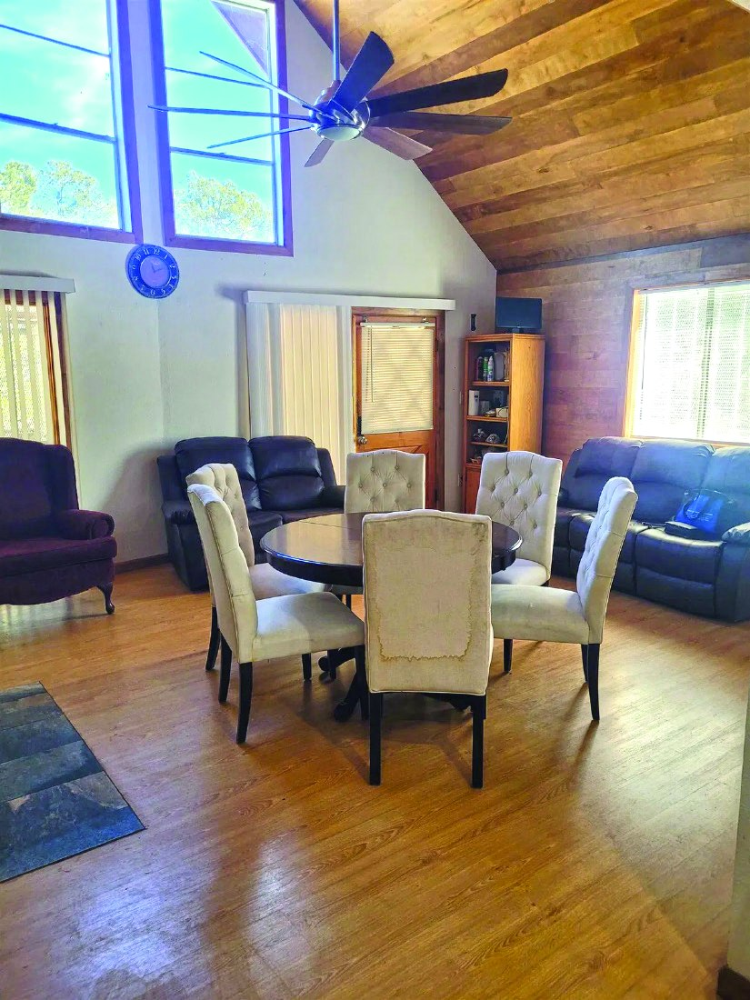

$298,000 Property MLS #172366
3 Bedroom Property
$295,000
| Price | $295,000 |
|---|---|
| Bedrooms | 3 |
| Bathrooms | 2 |
| MLS # | 172627 |
| Listed by | Aspen Trails Realty |
| Print edition | October 2026 Otero County Edition, page 5 |
About this property
3 BDRM, 2 BATH LOG-SIDED HOME with great views, high ceilings, many windows, a minisplit, and fireplace. Primary suite has en-suite bath, walk-in closet, and south views. Covered entry and Trex® deck for wildlife watching. Whole-house Generac® generator and adjoining lot with Lincoln National Forest access add privacy. $4,000 flooring allowance with acceptable offer.
Interested in this property?
Office phone: 575-682-7778
Aspen Trails Realty
Please contact the listing agent or company directly. The Real Estate Roundup is a publisher and does not show or sell properties.
Listing details and photo reproduced from the October 2026 print edition of The Real Estate Roundup (page 5), as printed. Prices and availability can change after publication — confirm with the listing agent.
More Homes

$299,000 2 Bedroom 1.66 Acre Property in Cloudcroft 2 bd · 1 ba · 1.66 acres Cloudcroft, New Mexico MLS #172484
$299,900 3 Bedroom Property in Timberon 3 bd · 2,376 sq ft Timberon, New Mexico MLS #172432
$299,900 Property in Cloudcroft Cloudcroft, New Mexico MLS #172758
$299,900 1012 Maple Ave Cloudcroft, New Mexico MLS #172365
$289,500 2 Bedroom Property 2 bd MLS #172389